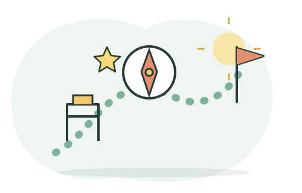

Mi futuro · ruta personal
Proyecto de vida
Convierte lo que te importa en metas y pasos alcanzables. Puedes cambiar de idea: esta ruta es una herramienta para pensar, no una decisión definitiva.

Solo se guarda en este navegador.
Una ruta sencilla
1. Imagino: ¿qué me gustaría aprender, aportar o experimentar?
2. Exploro: converso, busco información confiable y pruebo una actividad.
3. Actúo: elijo un primer paso que sí puedo hacer.
4. Reviso: observo qué funcionó y ajusto el plan.
No escribas información íntima ni datos que no quieras conservar en este equipo.
Videos para este módulo
Material de YouTube sobre proyecto de vida y motivación.
Cargando videos del módulo…
Los resultados vienen de YouTube. El docente debe revisar cada video antes de proyectarlo en el salón.